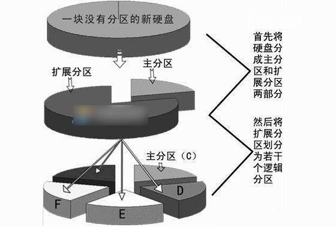
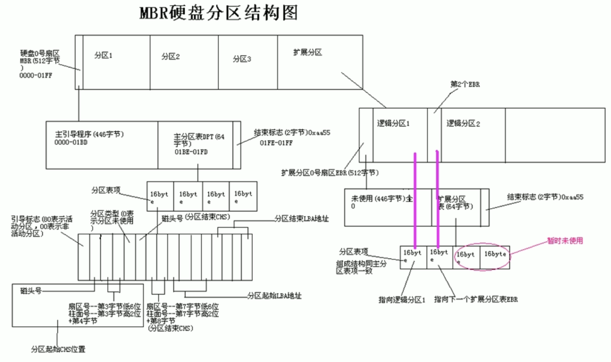
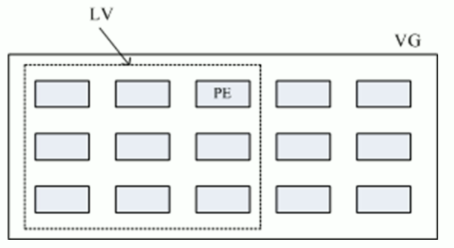
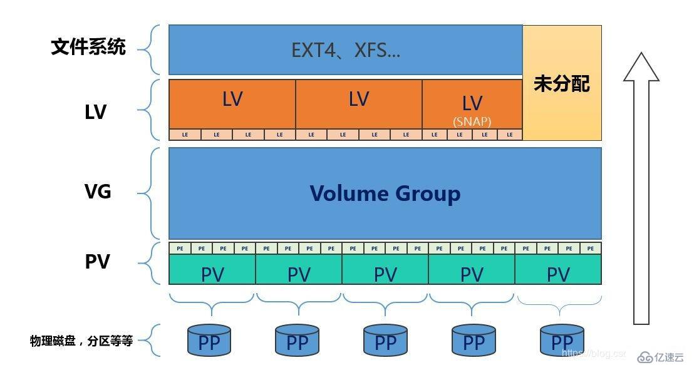
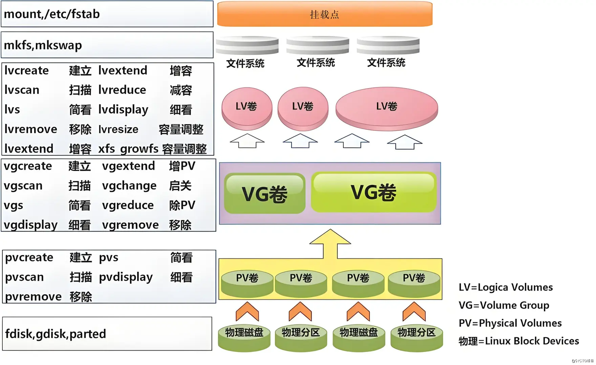
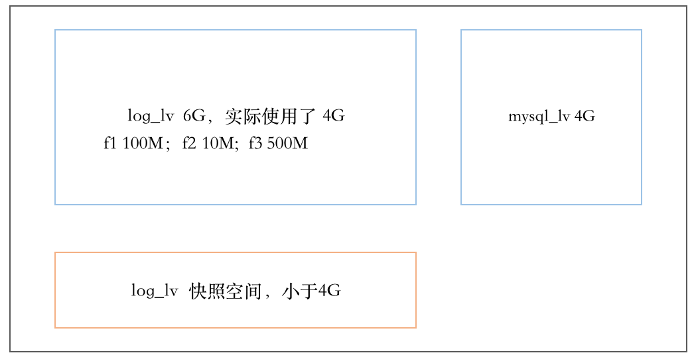

1 linux中的磁盘 1.1 设备文件 Linux 哲学思想：一切皆文件。对于硬件设备，在Linux系统中，也是以文件的形式呈现出来的
/sys 文件是系统是和 /proc 一样，是一个内存文件系统 ，在磁盘上并没有对应的内容。通常称其为sysfs，这是内核 “暴露” 给用户空间的一个 驱动模型层次结构的展现。因此，host0, host1 这些 “文件”是内核根据设备驱动程序 “发现” 的设备后在内存中创建的对应的 “文件” 和 “文件层次”。
设备文件：关联至一个设备驱动程序，进而能够跟与之对应硬件设备进行通信
1 2 3 4 5 6 7 [root@ubuntu2204 ~]# ll /dev/sda brw-rw---- 1 root disk 8, 0 Jul 29 08:51 /dev/sda [root@ubuntu2204 ~]# ll /dev/tty0 crw--w---- 1 root tty 4, 0 Jul 29 08:51 /dev/tty0
设备号码：
主设备号：major number, 标识设备类型
次设备号：minor number, 标识同一类型下的不同设备
设备类型：
块设备：block，存取单位“块”，磁盘
字符设备：char，存取单位“字符”，键盘
磁盘设备的设备文件命名
设备类型
设备文件命名
SAS,SATA,SCSI,IDE,USB
/dev/sda; /dev/sdb; /dev/sdc; ……
nvme协议硬盘
/dev/nvme0n1; /dev/nvme0n2; /dev/nvme0n3; ……
虚拟磁盘
/dev/vda; /dev/vdb; /dev/xvda; /dev/xvdb; ……
逻辑卷，从逻辑设备到物理设备的映射框架机制，在该机制下，用户可以很方便的根据自己的需要制定实现存储资源的管理策略
/dev/dm-0;/dev/dm-1;……
RAID设备
/dev/md0;/dev/md1;……
块设备
/dev/loop1;/dev/loop2;……
不同磁盘标识：a-z,aa,ab…
同一设备上的不同分区：1,2, …
范例
1 2 3 4 5 [root@Rocky ~]#ll /dev/nvme0* crw------- 1 root root 243, 0 8月 20 11:50 /dev/nvme0 brw-rw---- 1 root disk 259, 0 8月 20 11:50 /dev/nvme0n1 brw-rw---- 1 root disk 259, 1 8月 20 11:50 /dev/nvme0n1p1 brw-rw---- 1 root disk 259, 2 8月 20 11:50 /dev/nvme0n1p2
1.2 磁盘操作 范例：查看CHS
1 2 3 4 5 6 7 8 9 10 11 12 13 14 15 16 17 18 19 20 21 22 23 24 25 26 [root@rocky8 ~]#fdisk -l /dev/sda Disk /dev/sda: 20 GiB, 21474836480 bytes, 41943040 sectors Units: sectors of 1 * 512 = 512 bytes Sector size (logical/physical): 512 bytes / 512 bytes I/O size (minimum/optimal): 512 bytes / 512 bytes Disklabel type : dos Disk identifier: 0x43a6eada Device Boot Start End Sectors Size Id Type /dev/sda1 * 2048 2099199 2097152 1G 83 Linux /dev/sda2 2099200 41943039 39843840 19G 8e Linux LVM [root@rocky8 ~]#fdisk -u=cylinder -l /dev/sda Disk /dev/sda: 20 GiB, 21474836480 bytes, 41943040 sectors Geometry: 255 heads, 2 sectors/track, 2610 cylinders Units: cylinders of 510 * 512 = 261120 bytes Sector size (logical/physical): 512 bytes / 512 bytes I/O size (minimum/optimal): 512 bytes / 512 bytes Disklabel type : dos Disk identifier: 0x43a6eada Device Boot Start End Cylinders Size Id Type /dev/sda1 * 5 4117 4113 1G 83 Linux /dev/sda2 4117 82242 78126 19G 8e Linux LVM
范例：识别SSD和机械硬盘类型
1 2 3 4 5 6 7 8 9 10 11 12 13 14 15 16 17 18 19 20 21 22 23 24 [root@centos8 ~]#lsblk -d -o name,rota NAME ROTA sda 1 sr0 1 nvme0n1 0 nvme0n2 0 [root@centos8 ~]#ls /sys/block/ nvme0n1 nvme0n2 sda sr0 [root@centos8 ~]#cat /sys/block/*/queue/rotational 0 0 1 1 [root@centos8 ~]#cat /sys/block/sda/queue/rotational 1 [root@centos8 ~]#cat /sys/block/sr0/queue/rotational 1 [root@centos8 ~]#cat /sys/block/nvme0n1/queue/rotational 0 [root@centos8 ~]#cat /sys/block/nvme0n2/queue/rotational 0
范例: 测速
1 2 3 [root@ubuntu1804 ~]#dd | hdparm -t /dev/sda /dev/sda: Timing buffered disk reads: 1854 MB in 3.00 seconds = 617.80 MB/sec
自动检测新的硬盘
1 2 3 echo '- - -' > /sys/class/scsi_host/hostx/scanfor i in /sys/class/scsi_host/host*/scan;do echo '- - -' > $i ;done
ubuntu 自动检测新的硬盘
1 2 3 4 5 6 7 8 9 10 1 循环遍历 [root@ubuntu2204 ~]# for i in `ls /sys/class/scsi_host/`;do echo '- - -' >/sys/class/scsi_host/$i /scan;done 2 找出SPI总线对应的 host，只扫描该 host [root@ubuntu2204 ~]# grep mptspi /sys/class/scsi_host/host*/proc_name/sys/class/scsi_host/host32/proc_name:mptspi [root@ubuntu2204 ~]# echo '- - -' > /sys/class/scsi_host/host32/scan
2 磁盘分区 2.1 为什么分区
优化I/O性能
实现磁盘空间配额限制
提高修复速度
隔离系统和程序
安装多个OS
采用不同文件系统
2.2 分区类型 分区主要分为三类：主分区<— 扩展分区<— 逻辑分区
逻辑分区属于扩展分区，扩展分区属于主分区
主分区又叫做引导分区，是可以安装系统的分区

2.3 分区格式 2.3.1 MBR分区 MBR 分区，MBR 的意思是 “主引导记录”。MBR 最大支持 2TB 容量，在容量方面存在着极大的瓶颈。并且只支持创建最多4个主分区，也可以3主分区+1扩展(N个逻辑分区)。而GPT分区方式就没有这些限制
划分分区的单位：
CentOS 5 之前按整柱面划分
CentOS 6 版本后可以按Sector划分
0磁道0扇区：512bytes
446字节存放计算机启动的程序
64字节存放划分分区的信息，每个分区占16字节
2字节 55AA 标识位

硬盘主引导记录MBR由4个部分组成
主引导程序（偏移地址0000H–0088H），它负责从活动分区中装载，并运行系统引导程序
出错信息数据区，偏移地址0089H–00E1H为出错信息，00E2H–01BDH全为0字节
分区表（DPT,Disk Partition Table）含4个分区项，偏移地址01BEH–01FDH,每个分区表项长16个字节，共64字节为分区项1、分区项2、分区项3、分区项4
结束标志字，偏移地址01FE–01FF的2个字节值为结束标志55AA
为什么不能超过4个主分区？
因为在0磁道0扇区上只留了64bytes空间存储分区表信息，而一个分区的关键信息要占用16个字节来存放
为什么单分区不能超2T？
一个分区信息占用16个字节，其中记录分区开始位置的空间为4个字节，记录分区结束位置的空间也是4个字节；
一个字节8位，4个字节是32位，则起始位最小值为32个0，结束位最大值为32个1，
所以一个分区，最大就是2的32次方个扇区，一个扇区512字节，则最大空间是 232*29 = 241 字节；
240是T，那么241表示不超过2T
范例：二进制查看扇区情况
1 hexdump -C -n 512 /dev/sda
范例：备份MBR的分区表,并破坏后恢复
1 2 3 4 5 6 7 8 9 10 11 12 13 14 15 16 17 18 19 20 21 22 23 24 25 26 27 [root@centos8 ~]#dd if =/dev/sda of=/data/dpt.img bs=1 count=64 skip=446 bs=1：块大小1个字节 count=64：备份64字节 skip=446：不要前面446字节，取后面的64字节 /dev/sda：使用lsblk查看当前虚拟机的硬盘名称 /data/dpt.img：备份到的文件 [root@centos8 ~]#hexdump -C /data/dpt.img [root@centos8 ~]#scp /data/dpt.img 10.0.0.102: [root@centos8 ~]#dd if =/dev/zero of=/dev/sda bs=1 count=64 seek=446 [root@centos8 ~]#reboot ifconfig ens160 10.0.0.8/24 ip a a 10.0.0.8/24 dev ens160 scp 10.0.0.102:/root/dpt.img . dd if =dpt.img of=/dev/sda bs=1 count=64 seek=446reboot
问题：如何利用分区策略相同的另一台主机的分区表来还原和恢复当前主机破环的分区表？
1 2 3 4 5 6 7 8 9 sudo sfdisk -d /dev/sdX > partition_table.sfdiskscp partition_table.sfdisk user@target_host:/path/to/destination/ sudo sfdisk --verify /dev/sdX < partition_table.sfdisksudo sfdisk /dev/sdX < partition_table.sfdisk
2.3.2 GPT分区 GPT 分区（ubuntu装系统默认就是GPT分区），GPT 意为 GUID 分区表，它支持的磁盘容量比 MBR 大得多。这是一个正逐渐取代 MBR 的新标准，它是由 UEFI 辅住而形成的，将来 UEFI 用于取代老旧的 BIOS，而 GPT 则取代老旧的 MBR。
GPT：GUID（Globals Unique Identifiers） partition table 支持128个分区，当数据较大时可以使用GPT分区，使用64位，支持8Z（ 512Byte/block ）64Z （ 4096Byte/block）
使用128位UUID(Universally Unique Identifier) 表示磁盘和分区，GPT分区表自动备份在头和尾两份， 并有CRC校验位，自动备份
UEFI (Unified Extensible Firmware Interface 统一可扩展固件接口)硬件支持GPT，使得操作系统可以启动
2.4 管理分区 2.4.1 parted 命令 高级分区操作，可以是交互或非交互方式
注意：parted的操作都是实时生效的，小心使用
格式
1 2 3 4 5 6 7 8 9 10 11 12 13 14 15 16 17 18 19 20 21 22 23 24 parted [选项]... [设备 [命令 [参数]...]...] -l|--list -s|--script align-check TYPE N help [COMMAND] mklabel|mktable LABEL-TYPE mkpart PART-TYPE [FS-TYPE] START END name NUMBER NAME print [devices|free|list,all|NUMBER] quit rescue START END resizepart NUMBER END rm NUMBER select DEVICE disk_set FLAG STATE disk_toggle [FLAG] set NUMBER FLAG STATE toggle [NUMBER [FLAG]] unit UNIT version
范例
1 2 3 4 5 parted /dev/sdb mklabel gpt|msdos parted /dev/sdb print parted /dev/sdb mkpart primary 1 200（默认M） parted /dev/sdb rm 1 parted -l
范例
1 2 3 4 5 6 7 8 9 10 11 12 13 14 15 16 17 18 19 20 21 22 23 24 25 26 27 28 29 30 31 32 33 34 35 36 37 38 39 40 41 42 43 44 45 46 47 48 49 50 51 52 53 54 55 56 57 58 59 60 61 62 63 64 65 66 67 68 69 70 71 72 73 74 75 76 77 78 79 80 81 82 83 84 85 86 87 88 89 90 91 92 93 94 95 96 97 98 99 100 101 [root@centos8 ~]#parted /dev/sdb print Error: /dev/sdb: unrecognised disk label Model: VMware, VMware Virtual S (scsi) Disk /dev/sdb: 21.5GB Sector size (logical/physical): 512B/512B Partition Table: unknown Disk Flags: [root@centos8 ~]#parted /dev/sdb mklabel gpt Information: You may need to update /etc/fstab. [root@centos8 ~]#parted /dev/sdb print Model: VMware, VMware Virtual S (scsi) Disk /dev/sdb: 21.5GB Sector size (logical/physical): 512B/512B Partition Table: gpt Disk Flags: Number Start End Size File system Name Flags [root@centos8 ~]#parted /dev/sdb mkpart primary 1 1001 Information: You may need to update /etc/fstab. [root@centos8 ~]#parted /dev/sdb print Model: VMware, VMware Virtual S (scsi) Disk /dev/sdb: 21.5GB Sector size (logical/physical): 512B/512B Partition Table: gpt Disk Flags: Number Start End Size File system Name Flags 1 1049kB 1001MB 1000MB primary [root@centos8 ~]#parted /dev/sdb mkpart primary 1002 1102 Information: You may need to update /etc/fstab. [root@centos8 ~]#parted /dev/sdb print Model: VMware, VMware Virtual S (scsi) Disk /dev/sdb: 21.5GB Sector size (logical/physical): 512B/512B Partition Table: gpt Disk Flags: Number Start End Size File system Name Flags 1 1049kB 1001MB 1000MB primary 2 1002MB 1102MB 99.6MB primary [root@centos8 ~]#parted /dev/sdb rm 2 Information: You may need to update /etc/fstab. [root@centos8 ~]#parted /dev/sdb print Model: VMware, VMware Virtual S (scsi) Disk /dev/sdb: 21.5GB Sector size (logical/physical): 512B/512B Partition Table: gpt Disk Flags: Number Start End Size File system Name Flags 1 1049kB 1001MB 1000MB primary [root@centos8 ~]#parted /dev/sdb mklabel msdos Warning: The existing disk label on /dev/sdb will be destroyed and all data on this disk will be lost. Do you want to continue ? Yes/No? Y Information: You may need to update /etc/fstab. [root@centos8 ~]#parted /dev/sdb print Model: VMware, VMware Virtual S (scsi) Disk /dev/sdb: 21.5GB Sector size (logical/physical): 512B/512B Partition Table: msdos Disk Flags: Number Start End Size Type File system Flags [root@centos8 ~]#parted /dev/sdb GNU Parted 3.2 Using /dev/sdb Welcome to GNU Parted! Type 'help' to view a list of commands. (parted) help align-check TYPE N check partition N for TYPE(min|opt) alignment help [COMMAND] print general help , or help onCOMMAND mklabel,mktable LABEL-TYPE create a new disklabel (partition table) mkpart PART-TYPE [FS-TYPE] START END make a partition name NUMBER NAME name partition NUMBER as NAME print [devices|free|list,all|NUMBER] display the partition table,available devices, free space, all found partitions, or a particular partition quit exit program rescue START END rescue a lost partition near START and END resizepart NUMBER END resize partition NUMBER rm NUMBER delete partition NUMBER select DEVICE choose the device to editdisk_set FLAG STATE change the FLAG on selected device disk_toggle [FLAG] toggle the state of FLAG on selected device set NUMBER FLAG STATE change the FLAG on partition NUMBER toggle [NUMBER [FLAG]] toggle the state of FLAG on partition NUMBER unit UNIT set the default unit to UNIT version display the version number and copyright information of GNU Parted (parted)
2.4.2 分区工具fdisk和gdisk 格式
1 2 3 fdisk -l [-u] [device...] fdisk [device...] gdisk [device...]
选项
1 2 3 4 5 6 7 8 9 10 11 -b|--sector-size <size> -L|--color[=color] -l|--list -o|--output <list> -u|--units[=<unit>] -s|--getsz -b|--bytes N -t|--type type -C|--cylinders N -H|--heads N -S|--sectors N
子命令
1 2 3 4 5 6 7 8 9 10 11 12 13 14 15 16 17 18 19 20 21 22 23 24 25 26 27 fdisk p t n d v u w q x gdisk b c d i l n o p q r s t v w x
CentOS 7,8 同步分区表
CentOS6 通知内核重新读取硬盘分区表
1 2 3 4 5 6 7 8 9 10 11 12 13 partx -a /dev/DEVICE kpartx -a /dev/DEVICE -f: force [root@centos6 ~]#partx -a /dev/sda partx -d --nr M-N /dev/DEVICE [root@centos6 ~]#partx -d --nr 6-8 /dev/sda [root@centos6 ~]#partx -a /dev/sda
范例:非交互式创建分区
1 echo -e 'n\np\n\n\n+2G\nw\n' | fdisk /dev/sdc
范例: 批量创建分区
1 2 3 4 5 6 7 [root@centos8 ~]#echo -e 'n\np\n\n\n+1G\nw' | fdisk /dev/sdb [root@centos8 ~]#fdisk /dev/sdb <<EOF n p +1G w EOF
范例
1 2 3 4 5 fdisk -lo id ,size,type /dev/sda cat /proc/partitions
范例
1 2 3 4 5 6 7 8 9 10 11 12 13 14 15 16 17 18 19 20 21 22 23 24 [root@centos7 ~]#fdisk /dev/sdb Welcome to fdisk (util-linux 2.23.2). Changes will remain in memory only, until you decide to write them. Be careful before using the write command . Device does not contain a recognized partition table Building a new DOS disklabel with disk identifier 0x057e0640. Command (m for help ): n Partition type : p primary (0 primary, 0 extended, 4 free) e extended Select (default p): Partition number (1-4, default 1): First sector (2048-41943039, default 2048): Last sector, +sectors or +size{K,M,G} (2048-41943039, default 41943039): Command (m for help ): w The partition table has been altered! Calling ioctl() to re-read partition table. Syncing disks.
范例：硬盘分区问题
1 2 3 4 5 6 7 8 9 10 11 12 13 14 15 16 17 18 19 20 21 22 23 24 25 26 27 28 29 30 31 32 33 [root@centos7 ~]#fdisk -l /dev/sdb Disk /dev/sdb: 21.5 GB, 21474836480 bytes, 41943040 sectors Units = sectors of 1 * 512 = 512 bytes Sector size (logical/physical): 512 bytes / 512 bytes I/O size (minimum/optimal): 512 bytes / 512 bytes Disk label type : dos Disk identifier: 0x166a0e04 Device Boot Start End Blocks Id System /dev/sdb2 1026048 3123199 1048576 83 Linux [root@centos7 ~]#fdisk /dev/sdb Welcome to fdisk (util-linux 2.23.2). Changes will remain in memory only, until you decide to write them. Be careful before using the write command . Command (m for help ): n Partition type : p primary (1 primary, 0 extended, 3 free) e extended Select (default p): p Partition number (1,3,4, default 1): 1 First sector (2048-41943039, default 2048): Using default value 2048 Last sector, +sectors or +size{K,M,G} (2048-1026047, default 1026047): +5G Value out of range.
范例：修改分区类型
1 2 3 4 5 6 7 8 9 10 11 12 13 14 15 16 17 18 19 20 21 22 23 24 25 26 27 28 29 30 31 32 33 34 35 36 37 38 39 40 41 42 43 44 45 46 47 48 49 50 51 52 53 54 55 56 57 58 59 60 61 62 63 64 65 66 67 68 69 [root@centos7 ~]#fdisk -l /dev/sdb Disk /dev/sdb: 21.5 GB, 21474836480 bytes, 41943040 sectors Units = sectors of 1 * 512 = 512 bytes Sector size (logical/physical): 512 bytes / 512 bytes I/O size (minimum/optimal): 512 bytes / 512 bytes Disk label type : dos Disk identifier: 0x166a0e04 Device Boot Start End Blocks Id System /dev/sdb1 2048 1026047 512000 83 Linux /dev/sdb2 1026048 3123199 1048576 83 Linux [root@centos7 ~]#fdisk /dev/sdb Welcome to fdisk (util-linux 2.23.2). Changes will remain in memory only, until you decide to write them. Be careful before using the write command . Command (m for help ): t Partition number (1,2, default 2): 1 Hex code (type L to list all codes): L 0 Empty 24 NEC DOS 81 Minix / old Lin bf Solaris 1 FAT12 27 Hidden NTFS Win 82 Linux swap / So c1 DRDOS/sec (FAT- 2 XENIX root 39 Plan 9 83 Linux c4 DRDOS/sec (FAT- 3 XENIX usr 3c PartitionMagic 84 OS/2 hidden C: c6 DRDOS/sec (FAT- 4 FAT16 <32M 40 Venix 80286 85 Linux extended c7 Syrinx 5 Extended 41 PPC PReP Boot 86 NTFS volume set da Non-FS data 6 FAT16 42 SFS 87 NTFS volume set db CP/M / CTOS / . 7 HPFS/NTFS/exFAT 4d QNX4.x 88 Linux plaintext de Dell Utility 8 AIX 4e QNX4.x 2nd part 8e Linux LVM df BootIt 9 AIX bootable 4f QNX4.x 3rd part 93 Amoeba e1 DOS access a OS/2 Boot Manag 50 OnTrack DM 94 Amoeba BBT e3 DOS R/O b W95 FAT32 51 OnTrack DM6 Aux 9f BSD/OS e4 SpeedStor c W95 FAT32 (LBA) 52 CP/M a0 IBM Thinkpad hi eb BeOS fs e W95 FAT16 (LBA) 53 OnTrack DM6 Aux a5 FreeBSD ee GPT f W95 Ext'd (LBA) 54 OnTrackDM6 a6 OpenBSD ef EFI (FAT-12/16/ 10 OPUS 55 EZ-Drive a7 NeXTSTEP f0 Linux/PA-RISC b 11 Hidden FAT12 56 Golden Bow a8 Darwin UFS f1 SpeedStor 12 Compaq diagnost 5c Priam Edisk a9 NetBSD f4 SpeedStor 14 Hidden FAT16 <3 61 SpeedStor ab Darwin boot f2 DOS secondary 16 Hidden FAT16 63 GNU HURD or Sys af HFS / HFS+ fb VMware VMFS 17 Hidden HPFS/NTF 64 Novell Netware b7 BSDI fs fc VMware VMKCORE 18 AST SmartSleep 65 Novell Netware b8 BSDI swap fd Linux raid auto 1b Hidden W95 FAT3 70 DiskSecure Mult bb Boot Wizard hid fe LANstep 1c Hidden W95 FAT3 75 PC/IX be Solaris boot ff BBT 1e Hidden W95 FAT1 80 Old Minix Hex code (type L to list all codes): 8e #选择分区类型编号 Changed type of partition ' Linux' to ' Linux LVM' Command (m for help): w The partition table has been altered! Calling ioctl() to re-read partition table. Syncing disks. [root@centos7 ~]#fdisk -l /dev/sdb Disk /dev/sdb: 21.5 GB, 21474836480 bytes, 41943040 sectors Units = sectors of 1 * 512 = 512 bytes Sector size (logical/physical): 512 bytes / 512 bytes I/O size (minimum/optimal): 512 bytes / 512 bytes Disk label type: dos Disk identifier: 0x166a0e04 Device Boot Start End Blocks Id System /dev/sdb1 2048 1026047 512000 8e Linux LVM #改成8e（逻辑卷） /dev/sdb2 1026048 3123199 1048576 83 Linux
学习问题：就是这个sda2挂载了/boot，sda3那个lvm挂载了/，疑问就是/boot所占的空间，会影响到/的空间吗，因为boot也是在/下的
解答：/boot是单独分出来的sda2，跟sda3没关系，不会互相影响。
1 2 3 4 5 6 7 8 9 10 [root@ubuntu2004 ~]#df -h Filesystem Size Used Avail Use% Mounted on udev 1.9G 0 1.9G 0% /dev tmpfs 389M 1.6M 388M 1% /run /dev/mapper/ubuntu--vg-ubuntu--lv 18G 2.8G 15G 17% / tmpfs 1.9G 4.0K 1.9G 1% /dev/shm tmpfs 5.0M 0 5.0M 0% /run/lock tmpfs 1.9G 0 1.9G 0% /sys/fs/cgroup /dev/sda2 1.5G 209M 1.2G 16% /boot tmpfs 389M 0 389M 0% /run/user/0
2.4.3 lsblk 格式
1 2 3 4 5 6 7 8 9 10 11 12 13 14 15 16 17 18 19 20 21 22 23 24 25 26 27 28 29 30 -a|--all -b|--bytes -d|--nodeps -e|--exclude <list> -f|--fs -i|--ascii -I|--include <list> -J|--json -l|--list -T|--tree -m|--perms -n|--noheadings -o|--output <list> -O|--output-all -p|--paths -P|--pairs -r|--raw -s|--inverse -S|--scsi -t|--topology NAME MAJ:MIN RM SIZE RO TYPE MOUNTPOINT
范例
1 2 3 4 5 6 [root@ubuntu2204 ~]# lsblk -f /dev/sdc [root@rocky86 ~]# lsblk -f [root@ubuntu2004 ~]#lsblk -d -o NAME,SIZE
2.4.4 blkid 可以查看块设备属性信息
格式
1 2 3 4 blkid [OPTION]... [DEVICE] -U UUID -L LABEL
范例
1 2 3 4 5 6 7 8 9 10 11 12 13 14 15 16 17 [root@ubuntu2004 ~]#blkid /dev/sr0: UUID="2022-02-23-09-27-00-00" LABEL="Ubuntu-Server 20.04.4 LTS amd64" TYPE="iso9660" PTUUID="492bdcc4" PTTYPE="dos" /dev/sda2: UUID="04c587f7-1f97-4632-970a-0dd3e08fb398" TYPE="ext4" PARTUUID="118bc546-3a2d-4411-9c74-25f5a37bdbf3" /dev/sda3: UUID="8LrQLS-6cfS-HTCn-w7Vo-flx7-90dy-qDukq7" TYPE="LVM2_member" PARTUUID="b07f78ba-02aa-4575-ae26-7c97b4a43b73" /dev/mapper/ubuntu--vg-ubuntu--lv: UUID="8ef803b3-d204-4c23-b2e7-1a5ba91ea557" TYPE="ext4" /dev/loop1: TYPE="squashfs" /dev/loop2: TYPE="squashfs" /dev/loop3: TYPE="squashfs" /dev/loop4: TYPE="squashfs" /dev/loop5: TYPE="squashfs" /dev/loop6: TYPE="squashfs" /dev/sda1: PARTUUID="b96ee049-d3f9-49d0-a7dd-10cdd163f152" [root@ubuntu2004 ~]#blkid -U "04c587f7-1f97-4632-970a-0dd3e08fb398" /dev/sda2
PARTUUID是分区的唯一标识符，而UUID是文件系统的唯一标识符。以下是它们的具体解释：
PARTUUID（Partition UUID）：是针对GPT（GUID Partition Table）分区方案的分区表级别的唯一标识符。它是在创建分区时生成的，并且即使对分区进行重新格式化或更改文件系统类型，该标识符仍然保持不变。因为PARTUUID是从分区表中直接检索得到的，所以它可以访问分区而不依赖于分区内的文件系统内容。
UUID（Universally Unique Identifier）：通常是指文件系统级别的唯一标识符。它用于唯一识别一个特定的文件系统实例，比如一个ext4或NTFS分区。当文件系统被创建（例如，通过格式化操作）时，会生成一个UUID，并存储在文件系统的元数据中。如果文件系统被删除或重新格式化，UUID会改变。
简而言之，PARTUUID与分区结构相关联，而UUID与分区内的文件系统相关联。
2.4.5 findfs 查找分区
1 2 findfs [options] LABEL=<label> findfs [options] UUID=<uuid>
范例
1 2 3 4 5 6 [root@centos8 ~]#findfs UUID=f7f53add-b184-4ddc-8d2c-5263b84d1e15 /dev/sda2 [root@ubuntu2204 ~]# findfs LABEL='Ubuntu-Server 22.04 LTS amd64' /dev/sr0 [root@centos8 ~]#findfs `sed -En '/data/s#^([^ ]+).*#\1#p' /etc/fstab` /dev/sda3
2.5 Swap分区 2.5.1 配置swap分区 注意：为优化性能，可以将swap 分布存放，或高性能磁盘存放
Redhat 官方推荐推荐系统 swap 空间
系统中的 RAM 量
推荐的 swap 空间
允许休眠的建议 swap 空间大小
低于 2 GB
RAM 量的2倍数
RAM 容量的三倍
2 GB - 8 GB
等于 RAM 量
RAM 量的倍数
8 GB - 64 GB
4 GB 到 RAM 容量的 0.5 倍
RAM 容量的 1.5 倍
8 GB - 64 GB
独立负载（至少 4GB）
不建议使用休眠功能
范例
1 2 3 4 5 6 7 8 9 10 11 12 13 14 [root@ubuntu2204 ~]# free -h total used free shared buff/cache available Mem: 1.9Gi 347Mi 896Mi 1.0Mi 697Mi 1.4Gi Swap: 2.0Gi 0B 2.0Gi [root@ubuntu2204 ~]# dd if =/dev/zero of=/dev/null bs=30G count=1 dd : memory exhausted by input buffer of size 32212254720 bytes (30 GiB)[root@ubuntu2204 ~]# dd if =/dev/zero of=/dev/null bs=3G count=1 0+1 records in 0+1 records out 2147479552 bytes (2.1 GB, 2.0 GiB) copied, 7.40064 s, 290 MB/s
查询swap内存有哪些程序在使用：
1 2 3 4 5 6 7 8 9 10 11 12 13 14 15 16 17 18 19 for i in $(cd /proc;ls | grep "^[0-9]" | awk '$0>100' ); do awk '/Swap:/{a=a+$2}END{print "$i",a/1024"M"}' /proc/$i /smaps;done | sort -k2nrfor i in $(cd /proc;ls | grep "^[0-9]" | awk '$0>100' ); do awk '/Swap:/{a=a+$2}END{print "$i",a/1024"M"}' /proc/$i /smaps sort -k2nrswapon -s ps aux --sort =-%mem | head ps aux --sort =-%mem | grep -E 'S|Z' | head
2.5.2 交换分区实现过程
创建交换分区或者文件，然后使用mkswap写入特殊签名
在/etc/fstab文件中添加适当的条目
激活swap分区：swapon 磁盘路径
关闭swap分区：swapoff 磁盘路径
启用swap分区
1 2 3 4 5 6 7 8 9 10 11 12 13 14 15 16 17 18 19 20 21 22 23 24 25 26 27 28 29 30 31 32 33 34 swapon [OPTION]... [DEVICE] -a|--all -d|--discard[=policy] -e|--ifexists -f|--fixpgsz -o|--options list -p|--priority N -s|--summary --show[=columns] --noheadings --raw --bytes -v|--verbose -L label -U uuid LABEL=label UUID=uuid PARTLABEL=label PARTUUID=uuid device filename NAME TYPE SIZE USED PRIO UUID LABEL
创建swap分区
1 2 3 4 5 6 7 8 9 10 11 12 1 给硬盘设备修改分区类型为Linux swap 2 mkswap [device] 3 写入/etc/fstab文件中 4 swapon -a 1 dd if =/dev/zero of=/swapfile bs=1M count=1024 2 mkswap /swapfile 3 chmod 600 /swapfile 4 写入/etc/fstab文件中 5 swapon -a
禁用swap分区
1 2 3 4 5 6 7 8 9 10 11 12 13 14 15 16 17 18 19 swapon -s 查看设备名称 swapoff [OPTION]... [DEVICE] 1 在/etc/fstab中注释或删除swap那一行 2 sed -i '/swap/s/^/#/' /etc/fstab -a|--all -v|--verbose -L label -U uuid LABEL=label UUID=uuid device filename
查看swap分区
Priority越大，优先级越高，会被优先使用
1 2 3 4 5 6 [root@ubuntu2204 ~]# swapon -s Filename Type Size Used Priority /swap.img file 2097148 0 -2 /dev/sdc3 partition 2097148 0 -3 [root@ubuntu2204 ~]# cat /proc/swaps
SWAP的优先级
可以指定swap分区0到32767的优先级，值越大优先级越高
如果用户没有指定，那么核心会自动给swap指定一个优先级，这个优先级从-1开始，每加入一个新的没有用户指定优先级的swap，会给这个优先级减一
先添加的swap的缺省优先级比较高，除非用户自己指定一个优先级，而用户指定的优先级(是正数)永远高于核心缺省指定的优先级(是负数)
范例: 以文件实现swap功能
1 2 3 4 5 6 7 8 9 10 11 12 [root@centos8 ~]#dd if =/dev/zero of=/swapfile bs=1M count=1024 [root@centos8 ~]#mkswap /swapfile [root@centos8 ~]#blkid /swapfile >> /etc/fstab [root@centos8 ~]#vim /etc/fstab /swapfile swap swap defaults 0 0 [root@centos8 ~]#chmod 600 /swapfile [root@centos8 ~]#swapon -a [root@centos8 ~]#swapon -s Filename Type Size Used Priority /dev/sda5 partition 2097148 0 -2 /swapfile file 1048572 0 -3
永久禁用swap
1 2 3 4 5 6 7 8 9 10 11 [root@ubuntu2204 ~]#sed -i.bak '/swap/d' /etc/fstab [root@ubuntu2204 ~]#sed -i.bak '/swap/s@^@#@' /etc/fstab [root@ubuntu2204 ~]#swapoff -a [root@ubuntu2204 ~]#systemctl mask swap.target
关闭Swap交换分区的优点
提高性能：Swap交换分区通常会在物理内存不足时被使用，这会导致额外的I/O操作和延迟。当系统使用物理内存满足所有应用程序的需求时，关闭Swap交换分区可以避免这种情况的发生，从而提高服务器的性能。
减少磁盘使用：Swap交换分区通常占用一部分硬盘空间，关闭Swap交换分区可以减少磁盘使用，从而为其他用途释放空间。
减少系统管理复杂性：当系统有Swap交换分区时，需要定期检查Swap交换分区的使用情况，并可能需要调整Swap交换分区的大小。关闭Swap交换分区可以避免这些问题，从而简化系统管理。
关闭Swap交换分区也存在一些缺点：
内存压力增大：如果系统物理内存不足，关闭Swap交换分区会导致系统无法使用硬盘空间作为额外的内存，这可能导致应用程序崩溃或性能下降。
系统不稳定：在极端情况下，如果系统物理内存不足并且没有Swap交换分区可用，可能会导致系统不稳定或无法正常运行。
2.5.3 swap的使用策略 什么样的数据才能往swap里面放？
1 2 3 4 5 6 7 Active: 233836 kB Inactive: 1280348 kB Active(anon): 138780 kB Inactive(anon): 26740 kB Active(file): 95056 kB Inactive(file): 1253608 kB
active活跃数据，inactive非活跃数据，又分为匿名数据和文件数据
匿名数据不能往swap里面放
文件形式的active不能往swap里放，只有文件的inactive才能往swap放
所以并不是有了swap，内存就解决了
/proc/sys/vm/swappiness 的值（默认30）决定了当内存占用达到一定的百分比时，会启用swap分区的空间
使用规则
当内存使用率达到100-swappiness时,会启用交换分区
简单地说这个参数定义了系统对swap的使用倾向，此值越大表示越倾向于使用swap
可以设为0，这样做并不会禁止对swap的使用，只是最大限度地降低了使用swap的可能性，Linux内核3.5-rcl版本，包括RedHat企业版内核2.6.32-303，0意味着“在任何情况下都不要发生交换”。所以现在建议把这个值设置为1
当 /proc/sys/vm/swappiness 的值为 0 时，表示系统完全避免使用交换空间，只使用物理内存。这意味着系统将尽可能多地使用物理内存，即使物理内存不足，也不会使用交换空间。这可能会导致性能下降，因为频繁地访问物理内存比访问交换空间要慢得多。
当 /proc/sys/vm/swappiness 的值为 1 时，表示系统更倾向于使用交换空间而不是物理内存。这意味着系统在物理内存不足时会使用交换空间，但仍然优先考虑使用物理内存。这种设置可能会提高性能，因为交换空间通常比物理内存更快。然而，如果系统经常需要使用交换空间，那么性能可能会受到影响。
1 echo 1 > /proc/sys/vm/swappiness
范例
1 2 3 4 5 6 7 8 9 10 11 12 13 14 15 16 17 18 [root@centos8 ~]# cat /proc/sys/vm/swappiness 30 [root@centos7 ~]# cat /proc/sys/vm/swappiness 30 [root@centos6 ~]# cat /proc/sys/vm/swappiness 60 [root@rocky86 ~]# vim /etc/sysctl.conf vm.swappiness=0 [root@rocky86 ~]# sysctl -p vm.swappiness = 0 [root@ubuntu2204 ~]# cat /proc/sys/vm/swappiness 0
3 文件系统 3.1 概念 文件系统：操作系统内核中用来控制硬盘的一种程序
磁盘必须格式化制作文件系统，然后挂载才能使用
可以为整个磁盘格式化制作文件系统
也可以为某个MBR或者GPT分区格式化制作文件系统
每个硬盘分区都要有一个文件系统
操作系统读取硬盘的时候，不会一个扇区一个扇区地读取，这样效率太低，于是操作系统中的文件系统负责将磁盘的多扇区组织成一个个的block块，这样操作系统就可以一次性读取一个”块”（block），即一次性连续读取多个扇区，所以文件系统组织好了之后带来的方便之处
使用者—–》block块（文件系统）—–》n个扇区（硬盘的读写单位）
一个文件系统包含的三大类块
查看当前内核支持的文件系统
1 cat /lib/modules/`uname -r`/kernel/fs
查看当前系统可用的文件系统
当前系统支持的文件系统和当前系统可用的文件系统是两回事，modules 中的文件系统在编译时选择了才是可用的，而可用的文件系统包含了默认支持的文件系统，如果需要使用某个文件系统，而该文件系统又不在proc 中，则需要重新编译内 各种文件系统
固态硬盘（SSD）的分区格式实际是指文件系统。文件系统是操作系统用来控制如何在硬盘上存储和检索数据的一种方法。选择正确的文件系统对于最大化SSD 性能和兼容性至关重要
从系统角度来看，文件系统是对文件存储设备的空间进行组织和分配，负责文件存储并对存入的文件进行保护和检索的系统。具体地说，它负责为用户建立文件，存入、读出、修改、转储文件，控制文件的存取，安全控制，日志，压缩，加密等。
3.2 文件系统的组成 文件系统的组成部分
内核中的模块：ext4, xfs, vfat
Linux的虚拟文件系统：VFS
用户空间的管理工具：mkfs.ext4, mkfs.xfs,mkfs.vfat
VFS（Virtual Filesystem Switch）称为虚拟文件系统或虚拟文件系统转换，是一个内核软件层，在具体的文件系统之上抽象的一层，用来处理与 Posix 文件系统相关的所有调用，表现为能够给各种文件系统提供一个通用的接口，使上层的应用程序能够使用通用的接口访问不同文件系统，同时也为不同文件系统的通信提供了媒介。VFS 并不是一种实际的文件系统，它只存在于内存中，不存在任何外存空间，VFS 在系统启动时建立，在系统关闭时消亡。VFS由 超级块、inode、dentry、vfsmount 等结构来组成。
超级块
一个超级块对应一个文件系统(已经安装的文件系统类型如ext2，此处是实际的文件系统，不是VFS)。超级块是反映了文件系统整体的控制信息。超级块能够以多种的方式存在，对于基于磁盘的文件系统，它以特定的格式存在于磁盘的固定区域（取决于文件系统类型）上。在挂载文件系统时，该超级块中的内容被读入磁盘中，从而构建出位于内存中的新的超级块。
块组描述符表(GDT)
ext文件系统每一个块组信息使用32字节描述，这32个字节称为块组描述符，所有块组的块组描述符组成块组描述符表GDT(group descriptor table)。虽然每个块组都需要块组描述符来记录块组的信息和属性元数据，但是不是每个块组中都存放了块组描述符。将所有块组的块组信息组成一个GDT保存,并将该GDT存放于某些块组中，类似存放superblock和备份superblock的块
3.3 文件系统类型 本地文件系统（Local File Systems） ：
本地文件系统是直接挂载到计算机上的物理或虚拟存储设备上的文件系统。
用于存储本地数据，如硬盘驱动器、固态驱动器、USB 驱动器等。
常见的本地文件系统包括 EXT 家族（ext2、ext3、ext4）、Btrfs、XFS、F2FS 等。
Linux 常用文件系统
ext2：Extended file system 适用于那些分区容量不是太大，更新也不频繁的情况，例如 /boot 分区
ext3：是 ext2 的改进版本，其支持日志功能，能够帮助系统从非正常关机导致的异常中恢复
ext4：是 ext 文件系统的最新版。提供了很多新的特性，包括纳秒级时间戳、创建和使用巨型文件(16TB)、最大1EB的文件系统，以及速度的提升
EXT4是Linux系统下的日志文件系统，是EXT3文件系统的后继版本
Ext4的文件系统容量达到1EB，而支持单个文件则达到16TB
理论上支持无限数量的子目录
Ext4文件系统使用64位空间记录块数量和 inode数量
Ext4的多块分配器支持一次调用分配多个数据块
修复速度更快
xfs：SGI，支持最大8EB的文件系统
根据所记录的日志在很短的时间内迅速恢复磁盘文件内容
用优化算法，日志记录对整体文件操作影响非常小
是一个全64-bit的文件系统，最大可以支持8EB的文件系统，而支持单个文件则达到8EB
能以接近裸设备I/O的性能存储数据
swap：交换分区专用的文件系统
iso9660：光盘文件系统
btrfs（Oracle）
reiserfs
Windows 常用文件系统
Unix：
FFS（fast）
UFS（unix）：UFS是UNIX文件系统的简称，几乎是大部分UNIX类操作系统默认的基于磁盘的文件系统
JFS2
网络文件系统：
网络文件系统允许远程计算机通过网络访问和共享文件。这些文件系统通过网络协议（如 NFS、SMB/CIFS 等）提供文件共享数据。
NFS
CIFS
集群文件系统：
GFS2：基于X86_64，最大文件系统可到100TB
OCFS2（oracle）
分布式文件系统：
fastdfs
ceph：不仅仅是一个文件系统，还是一个有企业级功能的对象存储生态环境
moosefs
mogilefs
glusterfs
Lustre
RAW：
虚拟文件系统（Virtual File Systems） ：
虚拟文件系统是 Linux 内核中的一种抽象层，用于管理文件系统的抽象概念，而不是物理存储。
它允许操作系统访问不同类型的文件系统，如本地文件系统、网络文件系统和特殊文件系统，以统一的方式。
procfs 文件系统（/proc，用于访问进程和系统信息）
sysfs 文件系统（/sys，用于管理设备和内核参数）
tmpfs 文件系统（用于临时文件系统）等。
特殊文件系统（Special File Systems） ：
特殊文件系统用于提供对系统和硬件资源的访问，通常不存储文件数据，而是提供对系统信息的访问。
这些文件系统通常位于/proc和/sys目录下。
/proc文件系统提供了有关正在运行的进程、系统信息和内核参数的信息。有时候面试会问你，/proc 目录占用磁盘空间吗？显然是不占用的。
虚拟化文件系统（Virtualization File Systems） ：
这些文件系统用于虚拟化环境中，例如虚拟机管理器（如 KVM、VirtualBox）中，它们允许虚拟机访问主机系统上的文件和资源。
9pfs（用于QEMU虚拟机）
日志文件系统（Logging File Systems）：
这些文件系统使用日志记录（journaling）来跟踪文件系统的变化，以提高数据一致性和恢复性。
ext3和ext4是常见的日志文件系统。
闪存文件系统（Flash File Systems）：
闪存文件系统专门设计用于闪存存储设备
SSD、USB 闪存驱动器和 SD 卡
F2FS 文件系统。
3.4 创建文件系统 mkfs命令
1 2 3 4 5 6 7 8 9 10 11 12 13 14 15 16 17 18 19 1 mkfs.FS_TYPE /dev/DEVICE FS_TYPE： ext4 xfs btrfs vfat 2 mkfs -t FS_TYPE /dev/DEVICE -b -L LABEL -V|--verbose -j -i N -N N -I N -m N -O FEATURE[,...] -O ^FEATURE
范例
1 2 3 4 5 6 7 8 mkfs.ext4 mkfs.xfs [root@ubuntu2204 ~]# mkfs.ext4 /dev/sdc1 [root@ubuntu2204 ~]# mkfs.xfs /dev/sdc2
mke2fs：ext系列文件系统专用管理工具
1 2 3 4 5 6 7 8 9 10 11 12 mke2fs [OPTION]... DEVICE -t -b -L -j -i -N -I -m -O FEATURE[,...] -O ^FEATURE
3.5 管理文件系统 3.5.1 e2label 管理ext系列文件系统的LABEL
3.5.2 tune2fs 重新设定ext系列文件系统可调整参数的值
1 2 3 4 5 6 7 -l -L 'LABEL’ #修改卷标 -m N #修预留给管理员的空间百分比 -j #将ext2升级为ext3 -O #文件系统属性启用或禁用, -O ^has_journal -o #调整文件系统的默认挂载选项，-o ^acl -U UUID #修改UUID号
范例
1 [root@ubuntu2204 ~]# tune2fs -l /dev/sdc1
3.5.3 dumpe2fs 显示ext文件系统信息，将磁盘块分组管理
超级块存放整个文件系统的数据，都有备份，万一文件系统被破坏了，利用超级块的备份块可以修复
范例
1 2 3 4 [root@ubuntu2204 ~]# dumpe2fs /dev/sdc1 [root@ubuntu2204 ~]# dumpe2fs -h /dev/sdc1
3.5.4 xfs_info 显示示挂载或已挂载的 xfs 文件系统信息
1 xfs_info mountpoint|devname
范例
1 [root@centos8 ~]#xfs_info /dev/sda7
3.6 xfs文件系统备份与恢复 xfsdump备份工具：
完全备份：每一次都是对所有数据的备份
增量备份：和第一次备份进行比较，仅备份有差异的数据
xfsdump使用限制
必须用root权限
只能备份已挂载的文件系统
只能备份XFS文件系统
只能用xfsrestore解释
透过文件系统的UUID来分辨备份档，因此不能备份相同UUID的文件系统
xfsdump选项
1 2 3 4 5 6 -l：注意不是大写字母L而是小写，就是指定level，有0~9共10个等级，默认为0，即完整备份。 -L：xfsdump会记录每次备份的session Label，这里可以填写针对此文件系统的简易说明； -M：xfsdump可以记录存储Media Label，这里可以填写此媒体的简易说明。 -f：后面接产生的文件和destination file 。例如/dev/st0设备文件名或其他一般文件文件名 -I：大写的“i”，从/var/lib/xfsdump/inventory 列出目前备份的信息状态。
xfsdump备份和xfsrestore恢复
1 2 3 4 5 6 7 8 9 10 11 12 13 14 15 16 17 18 19 注意： （1）-L与-M后的你起的名字保持一致就行，也方便你记忆 （2）备份的源路径写/dev/sda1这种文件系统名字是通用写法，虽然在centos7.9中写挂载点路径虽然也可以，但是还是推荐用通用的靠谱一些 xfsdump -l 0 -L sdb3_bak -M sdb3_bak -f 全量备份的成果路径1 备份的源路径 xfsdump -l 1 -L sdb3_bak -M sdb3_bak -f 增量备份的成果路径2 备份的源路径 xfsdump -l 1 -L sdb3_bak -M sdb3_bak -f 增量备份的成果路径3 备份的源路径 xfsdump -l 1 -L sdb3_bak -M sdb3_bak -f 增量备份的成果路径4 备份的源路径 xfsrestore -f 全量备份的成果路径1 数据恢复的路径 xfsrestore -f 增量备份的成果路径2 数据恢复的路径 xfsrestore -f 增量备份的成果路径2 数据恢复的路径 xfsrestore -f 增量备份的成果路径2 数据恢复的路径
数据备份示例
1 2 3 4 5 6 7 8 9 10 11 12 13 14 15 16 17 18 19 20 21 22 23 24 25 26 27 28 29 30 31 32 33 34 35 36 37 38 39 40 [root@localhost ~]# df 文件系统 1K-块 已用 可用 已用% 挂载点 。。。。。。 /dev/sdb3 1038336 76836 961500 8% /opt [root@localhost ~]# cp -r /etc/ /opt/ [root@localhost ~]# echo 111 > /opt/1.txt [root@localhost ~]# ls /opt/ 1.txt etc [root@localhost ~]# [root@localhost ~]# xfsdump -l 0 -L sdb3_bak -M sdb3_bak -f /all.bak /opt [root@localhost ~]# echo 222 > /opt/2.txt [root@localhost ~]# xfsdump -l 1 -L sdb3_bak -M sdb3_bak -f /add.bak1 /opt [root@localhost ~]# echo 333 > /opt/3.txt [root@localhost ~]# xfsdump -l 1 -L sdb3_bak -M sdb3_bak -f /add.bak2 /opt 注意上面你备份的都是挂载点/opt,对应文件系统/dev/sdb3，这个在centos7.9中还可用，但是到了rockylinux9.3中会 报错： xfsdump: version 3.1.12 (dump format 3.0) - type ^C for status and control xfsdump: ERROR: /mydata/ does not identify a file system xfsdump: usage: xfsdump [ -a (dump DMF dualstate files as offline) ] 解决办法就是把挂载点/opt换成/dev/sdb3 如：xfsdump -l 0 -L sdb3_bak -M sdb3_bak -f /all.bak /dev/sdb3 [root@localhost ~]# du -sh /opt/ 41M /opt/ [root@localhost ~]# ll -h /all.bak -rw-r--r--. 1 root root 37M 11月 4 18:44 /all.bak [root@localhost ~]# ll -h /add.bak1 -rw-r--r--. 1 root root 22K 11月 4 18:45 /add.bak1 [root@localhost ~]# ll -h /add.bak2 -rw-r--r--. 1 root root 23K 11月 4 18:46 /add.bak2
数据恢复示例
1 2 3 4 5 6 7 8 9 10 11 [root@localhost ~]# rm -rf /opt/* [root@localhost ~]# xfsrestore -f /all.bak /opt/ ...... [root@localhost ~]# ls /opt/ 1.txt etc [root@localhost ~]# xfsrestore -f /add.bak1 /opt/ [root@localhost ~]# ls /opt/ 1.txt 2.txt etc [root@localhost ~]# xfsrestore -f /add.bak2 /opt/ [root@localhost ~]# ls /opt/ 1.txt 2.txt 3.txt etc
3.7 挂载 Linux 系统中“一切皆文件”，所有文件都放置在以根目录为树根的树形目录结构中。在Linux 看来，任何硬件设备也都是文件，它们各有自己的一套文件系统 (文件目录结构)。
因此产生的问题是，当在 Linux 系统中使用这些硬件设备时，只有将Linux本身的文件目录与硬件设备的文件目录合二为一，硬件设备才能为我们所用。合二为一的过程称为“挂载”，如果不挂载，通过Linux系统中的图形界面系统可以查看找到硬件设备，但命令行方式无法找到。
挂载：将磁盘挂载到某一个目录下(最好是空目录)，这个目录下的文件就会存储在这个磁盘中，所挂载的目录称为挂载点
卸载：为解除此关联关系的过程
3.7.1 挂载文件系统 格式
1 mount [-fnrsvw] [-t vfstype] [-o options] device mountpoint
device：指明要挂载的设备
设备文件：例如:/dev/sda5
卷标：-L ‘LABEL’, 例如 -L ‘MYDATA’
UUID： -U ‘UUID’：例如 -U ‘0c50523c-43f1-45e7-85c0-a126711d406e’
伪文件系统名称：proc, sysfs, devtmpfs, configfs
mountpoint ：挂载点目录必须事先存在，建议使用空目录
mount 常用命令选项
1 2 3 4 5 6 7 8 9 10 11 12 13 14 15 16 17 18 19 20 21 22 23 24 25 26 27 28 29 30 31 32 33 34 35 36 -t fstype -r -w -n -a -L 'LABEL' -U 'UUID' -B --source device 指明源(路径、标签、uuid) -L -U LABEL=label UUID=uuid PARTLABEL=label PARTUUID=uuid device directory file -o options：(挂载文件系统的选项)，多个选项使用逗号分隔 async sync atime/noatime diratime/nodiratime auto/noauto exec /noexec dev/nodev suid/nosuid remount ro/rw user/nouser acl/noacl loop _netdev defaults
挂载规则
一个挂载点同一时间只能挂载一个设备
一个挂载点同一时间挂载了多个设备，只能看到最后一个设备的数据，其它设备上的数据将被隐藏
一个设备可以同时挂载到多个挂载点
通常挂载点一般是已存在空的目录
范例
1 2 3 [root@ubuntu2204 ~]# mount --source /dev/sdc2 -o ro /sdc2 mount /dev/sdb1 /opt/
往目录/opt下新建的文件存到了哪里？
卸载/opt后，数据是否存在？
存在，因为数据已经存到了磁盘，重新挂载还是可以看到数据
重新格式化/dev/sdb1后，数据是否依然存在？
同一个分区/文件系统挂载到不同的文件夹下，数据的来源是否一致？
一致，因为他们的数据都是会存在同一个磁盘中，可以共享里面的数据
sdb1挂载到 /，sdb2挂载到 /opt，那么sdb1可以存储 /opt 下的数据吗？
不可以，虽然opt是在 / 下，但是 /opt 已经挂载到sdb2上了，那么sdb2就是它存储数据的硬盘，如果说 /opt 没有被挂载到哪个硬盘上，那么数据就会存储在sdb1上
3.7.2 卸载文件系统 卸载时：可使用设备，也可以使用挂载点
3.7.3 查看挂载情况 查看挂载
1 2 3 4 5 6 mount cat /proc/mountscat /etc/mtab
查看挂载点情况
1 findmnt MOUNT_POINT|device
范例
1 2 3 4 5 6 7 [root@ubuntu2204 ~]# findmnt ...... [root@ubuntu2204 ~]# findmnt /dev/sdc1 TARGET SOURCE FSTYPE OPTIONS /sdc1 /dev/sdc1 ext4 rw,relatime
查看正在访问指定文件系统的进程
1 2 lsof MOUNT_POINT fuser -v MOUNT_POINT
终止所有在正访问指定文件系统的进程
3.7.4 持久挂载 开机自动挂载两种方式
将挂载命令写入/etc/rc.local中，注意这是个软链接，需要给源文件加x执行权限
在/etc/fstab按照格式写入信息，UUID可以通过blkid命令查看
当写入文件的内容不小心写错的时候，导致重启开机失败，我们先在VM里以故障状态登陆root，然后打开 /etc/fstab，将有错误的更改或者注释，就可以了
每行定义一个要挂载的文件系统,，其中包括共 6 项
1 2 3 4 5 6 7 8 9 10 11 [root@rocky8 ~]#cat /etc/fstab /dev/mapper/rl-root / xfs defaults 0 0 UUID=a1564c83-06da-4ee2-9442-409727529931 /boot xfs defaults 0 0 /dev/mapper/rl-swap none swap defaults 0 0 第一项： 设备的标识 (LABEL=label | UUID=uuid | /dev/sda1) 第二项： mountpoint ，必须是事先存在的目录 第三项： 文件系统 ext4 ,iso9660 第四项: 挂载选项，defaults ，acl，bind ，ro，rw 等 第五项： 备份频率 0 不做备份; 1 每天转储; 2 每隔一天转储 第六项; fsck检查的文件系统的顺序：0 不自检 ; 1 首先自检，一般只有rootfs才用；2 非rootfs使用
添加新的挂载项，需要执行下面命令生效，此命令只针对文件新增行或删除行有效，如果在中间修改了挂载选项，则此命令无效
范例：centos7, 8 /etc/fstab 的分区UUID错误，无法启动
1 2 3 4 不需要其他操作，自动进入emergency mode,系统提示输入root 密码
范例：centos 6 /etc/fstab 的分区UUID错误，无法启动
1 2 3 4 5 6 如果/etc/fstab 的挂载设备出错，比如文件系统故障，并且文件系统检测项（即第6项为非0），将导致无法启动 自动进入emergency mode,输入root 密码 将故障行的最后1项，即第6项修改为0，开机不检测此项挂载设备的健康性，从而忽略错误，能实现启动
3.7.5 重新挂载 修改了/etc/fstab 文件中的挂载规则，无法通过 mount -a 生效，要执行执行挂载
1 mount -o remount MOUNTPOINT
4 磁盘管理命令 4.1 df 查看磁盘分区使用情况：当你需要了解每个挂载点或磁盘分区的已用、可用以及总空间时，应该使用df命令。df可以快速给出整个文件系统的空间使用摘要，因为它直接从文件系统获取信息，而不是通过计算文件大小。
只能查看挂载下的文件系统
文件系统空间实际真正占用等信息的查看工具
格式
1 2 3 4 5 6 7 8 9 10 11 12 13 14 15 16 df [OPTION]... [device]...-a|--all -B|--block-size=SIZE --direct -h|--human-readable -H|--si -i|--inodes -k -l|--local --output[=FIELD_LIST] -P|--portability --total -t|--type =TYPE -T|--print-type -x|--exclude-type=TYPE
范例
1 2 3 4 5 6 7 8 9 10 11 12 13 14 df -idf -Tdf -h --totaldf -mdf -x tmpfs -x devtmpfs
4.2 du 查看文件或目录占用空间：如果你想要知道某个目录或一组文件具体占用了多少磁盘空间，可以使用du命令。du会遍历指定目录中的所有文件和子目录，逐一报告它们的大小。这个命令尤其有用当你需要找出哪个文件或目录占用了最多空间时
查看某目录总体空间实际占用状态
显示指定目录下面各个子目录的大小,单位为KB
格式
1 2 3 4 5 6 7 8 9 10 11 12 13 14 15 16 17 du [OPTION]... DIRdu [OPTION]... --files0-from=F-0 -a -B -b -c -d -h -k -m --si -s -X --exclude=PATTERN -x
范例
1 2 3 4 5 [root@ubuntu2204 ~]# du -sh /etc/ [root@ubuntu2204 ~]# du -sh /var/log/* | head -n 3
范例
1 2 3 4 5 6 7 8 9 10 11 12 13 14 du -a /path/to/directorydu -h --max-depth=1 /path/to/directorydu -shx /path/to/directorydu -c /path/to/directory1 /path/to/directory2du -L /path/to/symlink
4.3 df和du的差别 df命令关注的是文件系统的磁盘空间使用情况，它包括了被文件和程序占用的空间，甚至包括已经删除但尚未由操作系统释放的文件所占用的空间。这意味着df命令提供的是一个更为全面的磁盘使用概览，它可以帮助我们了解磁盘的空闲空间以及整体的使用状况。
du命令则专注于计算文件或目录占用的磁盘空间，它是一个面向文件的命令，只会统计当前存在的文件所占用的空间。du命令通过累加各个文件的大小来计算总占用空间，这使得它特别适合于查找特定目录下的磁盘使用详情。例如，当我们需要找出哪个文件或哪个目录占用了大量空间时，du命令就会非常有用。
特点
df
du
功能
显示文件系统的磁盘空间使用情况
估算文件和目录的磁盘空间使用情况
范围
显示已挂载文件系统的磁盘空间使用情况
递归计算指定目录下所有文件和子目录的磁盘空间使用情况
输出信息
文件系统的磁盘空间使用情况，包括总容量、已使用、可用和挂载点等信息
文件和目录的磁盘空间使用量
查找大文件
否
是
用途
查看整个文件系统的使用情况和可用空间
定位存储占用问题，查找占用空间较大的文件或目录
4.4 dd dd命令的全称是disk dump，意为磁盘转储。在Unix/Linux中，用于复制和转换文件。可以读取/或写入到硬件的设备驱动（如硬盘）和特殊设备文件（如/dev/zero和/dev/random），就像普通文件一样，即按照指定的规则复制文件、转换文件格式以及创建镜像文件
1 2 3 4 5 6 7 8 9 10 11 12 13 14 15 16 17 18 19 20 21 22 23 24 25 dd if =/PATH/FROM/SRC of=/PATH/TO/DEST bs=# count=#/PATH/FROM/SRC：要复制内容的源文件 /PATH/TO/DEST：目标文件，将接收复制的内容 if =file of=file ibs=size obs=size bs=size cbs=size skip=blocks seek=blocks count=n conv=conversion[,conversion...] ascii ebcdic lcase ucase nocreat noerror notrunc sync fdatasync
范例：创建空白文件
1 2 3 4 5 6 7 8 9 dd if =/dev/zero of=test bs=block_size count=number_of_blocks1 dd : 这是命令本身，代表disk dump。 2 if =/dev/zero: 这是输入文件（input file）的路径。这里指定的是/dev/zero，这是一个特殊的设备文件，它只产生零字节（null bytes）。 3 of=test : 这是输出文件（output file）的路径。在这个例子中，输出的文件名为test 。 4 bs=block_size: 这是块大小（block size）。这意味着每次读取和写入的数据块的大小。例如，如果block_size是4K，那么每次读取和写入的数据块将是4KB。 5 count=number_of_blocks: 这指定了要读取和写入的块数。因此，如果block_size是4K，并且number_of_blocks是100，那么将创建400KB的文件。
范例
1 2 3 4 5 6 7 dd if =/dev/zero of=test bs=1M count=1000在当前目录下会生成一个1000M的test 文件，文件内容为全0（因从/dev/zero中读取，/dev/zero为0源），但是这样为实际写入硬盘，文件产生速度取决于硬盘读写速度，如果欲产生超大文件，速度很慢。在某种场景下，我们只想让文件系统认为存在一个超大文件在此，但是并不实际写入硬盘 则可以dd if =/dev/zero of=test bs=1M count=0 seek=100000 此时创建的文件在文件系统中的显示大小为100000MB，但是并不实际占用block，因为count=0，因此创建速度与内存速度相当，seek的作用是跳过输出文件中指定大小的部分，这就达到了创建大文件，但是并不实际写入的目的。当然，因为不实际写入硬盘，所以你在容量只有10G的硬盘上创建100G的此类文件都是可以的。
范例：随机生成1百万个1K的文件
1 seq 1000000 | xargs -i dd if =/dev/zero of={}.dat bs=1024 count=1
范例：创建随机数据文件
1 2 dd if =/dev/urandom of=output_file bs=block_size count=number_of_blocks
范例：制作设备镜像
1 2 dd if =input_device of=output_file bs=4M
范例
1 2 3 4 5 6 7 8 9 10 11 12 13 14 15 16 17 18 19 20 21 22 23 24 25 26 27 28 29 [root@centos8 ~]#cat f1.txt; abcdef [root@centos8 ~]#cat f2.txt 123456789 [root@centos8 ~]#dd if =f1.txt of=f2.txt bs=1 count=2 skip=3 seek=4 2+0 records in 2+0 records out 2 bytes copied, 6.6515e-05 s, 30.1 kB/s [root@centos8 ~]#cat f2.txt 1234de [root@centos8 ~]#echo 123456789 > f2.txt [root@centos8 ~]#cat f2.txt 123456789 [root@centos8 ~]#cat f1.txt abcdef [root@centos8 ~]#cat f1.txt; cat f2.txt abcdef 123456789 [root@centos8 ~]#dd if =f1.txt of=f2.txt bs=1 count=2 skip=3 seek=4 conv=notrunc 2+0 records in 2+0 records out 2 bytes copied, 7.6153e-05 s, 26.3 kB/s [root@centos8 ~]#cat f2.txt 1234de789
范例
1 2 3 4 5 6 7 8 9 10 11 12 13 14 15 16 17 18 19 20 21 22 23 24 25 26 27 28 29 30 31 32 33 34 35 36 37 38 39 40 41 42 43 dd if =/dev/sda of=/tmp/mbr.bak bs=512 count=1dd if =/dev/zero of=/dev/sda bs=64 count=1 seek=446dd if =fileA of=fileB bs=1 count=128 skip=63 seek=31 conv=notruncdd if =/dev/sdx of=/dev/sdydd if =/dev/sdx of=/path/to/imagedd if =/dev/sdx | gzip >/path/to/image.gzdd if =/path/to/image of=/dev/sdxgzip -dc /path/to/image.gz | dd of=/dev/sdx dd if =/dev/mem of=/root/mem.bin bs=1024dd if =/dev/cdrom of=/root/cdrom.isodd if =/dev/urandom of=/dev/sda1dd if =/dev/zero of=/root/1Gb.file bs=1024 count=1000000dd if =/dev/zero of=/root/1Gb.file bs=2048 count=500000 dd if =/dev/zero of=/root/1Gb.file bs=4096 count=250000dd if =/dev/zero of=/root/1Gb.file bs=1024 count=1000000dd if =/root/1Gb.file bs=64k | dd of=/dev/null
注意：虽然dd命令强大，但使用时务必小心。一不小心，错误的命令参数就可能导致数据丢失，因此在执行任何操作之前，一定要仔细检查命令
高级应用：定制化dd命令
1 2 3 4 5 6 7 8 9 10 11 12 dd if =input_file of=output_file bs=4M status=progressdd if =input_file of=output_file bs=4M conv=sync ,noerrordd if =input_file of=output_file bs=4M skip=10dd if =input_file1 of=output_file bs=4Mdd if =input_file2 of=output_file bs=4M seek=1
5 逻辑卷管理器LVM 5.1 概念 传统磁盘管理的痛点
磁盘空间耗尽后，通常需要将系统脱机，然后通过一系列繁琐而复杂的操作，以增加磁盘分区的可用空间，不能直接扩容
如果分区设置的过大，就白白浪费了磁盘空间；
如果分区设置的过小，就会导致空间不够用的情况出现。
对于分区过小的问题，我们可以重新划分磁盘的分区，或者通过软连接的方式将此分区的目录链接到另外一个分区。这样做虽然能够临时解决问题，但是给管理带来了麻烦。
LVM：可以允许对卷进行方便操作的抽象层，包括重新设定文件系统的大小，允许在多个物理设备间重新组织文件系统；LVM可以弹性的更改LVM的容量，通过交换PE来进行资料的转换，将原来LV内的PE转移到其他的设备中以降低LV的容量，或将其他设备中的PE加到LV中以加大容量
可以创建和管理“逻辑”卷，而不是直接使用物理硬盘。可以让管理员弹性的管理逻辑卷的扩大缩小，操作简单，而不损坏已存储的数据。可以随意将新的硬盘添加到LVM，以直接扩展已经存在的逻辑卷。LVM并不需要重启就可以让内核知道分区的存在。


物理卷(PV):（physical volume）,把常规的磁盘设备通过pvcreate命令对其进行初始化，形成了物理卷。其实就是硬盘或分区。（面粉）
卷组(VG):（volume group）,把多个物理卷组成一个逻辑的整体，这样卷组的大小就是多个硬盘之和。或者理解就是由一个或多个PV组成的整体。（面团）
逻辑卷(LV)：（logical volume），从卷组中划分需要的空间大小出来。用户仅需对其格式化然后即可挂载使用。从VG中切割出的空间用于创建文件系统。（切成馒头）
基本单元(PE)：(physical extend),分配的逻辑大小的最小单元，默认为4MB的基本块。（假设分配100MB逻辑空间，则需要创建25个PE）

LVM的缺点
因为加入了额外的操作，存取性能受到影响。
当卷组中的一个磁盘损坏时，整个卷组都会受到影响。
解释：LVM如果有一个磁盘损坏,整个lvm都坏了，lvm只有动态扩展作用
方案：底层用RAID + 上层LVM = 既有冗余又有动态扩展
LVM的动态扩容：逻辑卷要是想扩容，必须保证卷组有足够的空间，若是卷组没有空间了，就要新增一个磁盘，打造为物理卷，添加到卷组中才可以进行扩容
5.2 实现逻辑卷 相关工具来自于 lvm2 包
硬盘变成逻辑卷步驟
把硬盘或者分区通过pvcreate变成物理卷，物理卷是用固定大小的物理区域（Physical Extent，PE）来定义的
把多个物理卷通过vgcreate变成卷组
把卷组通过lvcreate分出空间给逻辑卷
创建文件系统
挂载
1 2 3 4 5 6 7 8 9 10 11 12 13 14 15 16 fdisk /dev/sdb 1 pvcreate /dev/sdc /dev/sdb1（pvcreate /dev/sd{b1,c}） 2 vgcreate -s 16 testvg0 /dev/sdc /dev/sdb1 3 lvcreate -L 6G -n lv-mysql testvg0 4 mkfs.ext4 /dev/testvg0/lv-mysql 5 mount /dev/testvg0/lv-mysql /data/mysql
第一个逻辑卷对应设备名：/dev/dm-#
dm：device mapper，将一个或多个底层块设备组织成一个逻辑设备的模块
软链接：
/dev/mapper/VG_NAME-LV_NAME
/dev/VG_NAME/LV_NAME
范例
1 2 3 4 5 6 7 [root@rocky86 ~]# ll /dev/mapper/rl* lrwxrwxrwx 1 root root 7 Aug 1 09:38 /dev/mapper/rl-home -> ../dm-2 lrwxrwxrwx 1 root root 7 Aug 1 09:38 /dev/mapper/rl-root -> ../dm-0 lrwxrwxrwx 1 root root 7 Aug 1 09:38 /dev/mapper/rl-swap -> ../dm-1 [root@ubuntu2204 ~]# ll /dev/mapper/*lv lrwxrwxrwx 1 root root 7 May 14 12:11 /dev/mapper/ubuntu--vg-ubuntu--lv ->../dm-0
5.2.1 pv管理工具 将块设备创建为物理卷，本质上就是给块设备打一个标签
显示pv
创建pv
删除pv
5.2.2 vg管理工具 显示卷组
范例
1 2 3 4 5 6 7 8 [root@ubuntu2204 ~]# vgdisplay testvg ..... VG Size <24.97 GiB PE Size 16.00 MiB Total PE 1598 Alloc PE / Size 0 / 0 Free PE / Size 1598 / <24.97 GiB .....
创建卷组
1 2 3 4 5 vgcreate [-s Size ] vgname pv1 [pv2...] -s 指定PE大小，默认4M，数字加单位，单位为 k|K|m|M|g|G|t|T|p|P|e|E vgcreate -s 16M vg0 /dev/sdb /dev/sdc
管理卷组
1 2 vgextend vgname pv1 [pv2...] vgreduce vgname pv1 [pv2...]
扩展卷组可以带来以下好处：
增加存储空间：通过添加新的物理卷（磁盘或分区）来扩展卷组，可以为卷组提供额外的存储空间。
提高灵活性：扩展卷组后，可以利用新的空间创建新的逻辑卷，或者将现有的逻辑卷扩展到更大的空间。
优化性能：如果原有的物理卷已经接近满载，扩展卷组并添加新的物理卷可以提高读写性能，因为数据可以在更多的物理设备上分布。
高可用性：扩展卷组后，可以将数据迁移到新的物理卷上，以提高数据的冗余度和可用性。
范例：扩展vg
1 2 3 4 5 6 7 8 9 10 11 12 13 14 15 16 17 18 [root@ubuntu2204 ~]# pvs PV VG Fmt Attr PSize PFree /dev/sda3 ubuntu-vg lvm2 a-- <198.00g 99.00g /dev/sdb1 testvg lvm2 a-- 4.98g 4.98g /dev/sdb2 lvm2 --- 5.00g 5.00g /dev/sdc testvg lvm2 a-- 19.98g 19.98g [root@ubuntu2204 ~]# vgextend testvg /dev/sdb2 Volume group "testvg" successfully extended [root@ubuntu2204 ~]# pvs PV VG Fmt Attr PSize PFree /dev/sda3 ubuntu-vg lvm2 a-- <198.00g 99.00g /dev/sdb1 testvg lvm2 a-- 4.98g 4.98g /dev/sdb2 testvg lvm2 a-- 4.98g 4.98g /dev/sdc testvg lvm2 a-- 19.98g 19.98g
删除卷组
删除vg之前，要先把对应的 pv 解除绑定
5.2.3 lv管理工具 显示逻辑卷
创建逻辑卷
1 2 3 4 5 6 7 8 lvcreate -L -L -n -l lvcreate -l +60%VG -n mylv testvg lvcreate -l +100%FREE -n yourlv testvg
扩展逻辑卷
1 2 3 4 5 lvextend {-L N[mMgGtT]|-l N} LV_NAME -L[+]Size[mMgGtT] -l[+]Number[PERCENT] -r
缩减逻辑卷
1 2 3 4 lvreduce {-L N[mMgGtT]|-l N} LV_NAME -L -l
删除逻辑卷
1 lvremove /dev/VG_NAME/LV_NAME
重设文件系统大小
修改了逻辑卷大小后，要同步文件系统
1 2 3 4 5 6 7 8 fsadm [options] resize device [new_size[BKMGTEP]] xfs_growfs /mountpoint resize2fs [-f] [-F] [-M] [-P] [-p] device [new_size] -f：强制执行调整操作，不需要检查文件系统的完整性。 -F：显示当前文件系统的特性（例如，是否启用了日志功能）。 -M：显示文件系统的超级块备份信息。 -P：显示文件系统的备用超级块位置。 -p：在调整文件系统大小之前，检查并修复文件系统的错误。
范例：创建lv
1 2 3 4 5 6 7 8 9 10 11 12 13 14 15 [root@ubuntu2204 ~]# lvcreate -l 100 -n lv1 testvg Logical volume "lv1" created. [root@ubuntu2204 ~]# lvcreate -L 5G -n lv2 testvg Logical volume "lv2" created. [root@ubuntu2204 ~]# lvcreate -l 20%free -n lv3 testvg Logical volume "lv3" created. [root@ubuntu2204 ~]# lvcreate -l 10%VG -n lv4 testvg Logical volume "lv4" created.
逻辑卷的使用跟硬盘分区使用一样，要先创建文件系统，再进行挂载
5.2.4 扩展和缩减逻辑卷 5.2.4.1 在线扩展逻辑卷 扩展逻辑卷之前，要先保证卷组上还有空间
两步实现，先扩展逻辑卷，再扩容文件系统
1 2 3 4 5 6 7 8 lvextend -L [+]#[mMgGtT] /dev/VG_NAME/LV_NAME resize2fs /dev/VG_NAME/LV_NAME xfs_growfs MOUNTPOINT
一步实现容量和文件系统的扩展
1 2 3 4 5 6 7 lvresize [option] /dev/VG_NAME/LV_NAME -L -l -r -A
范例
1 2 3 4 5 6 lvextend -L +100%free /dev/testvg0/lv-mysql resize2fs /dev/testvg0/lv-mysql lvresize -r -l +100%FREE /dev/testvg0/lv-mysql
学习问题1
问题：一开始创建逻辑卷，sdb1和sdb2都关联到了test-mysql逻辑卷，然后将sdb3扩展到test卷组，但是为什么扩展到了之后，sdb3没有关联到test-mysql卷组
解答：之所以test-mysql存在sdb1和sdb2上，是因为它需要6G的那个空间，而sdb1和sdb2都只有5G，加起来10G，所以它才会同时存在这两个地方，已经确保有6G足够可用的空间，test-mysql存在了sdb1和2上，已经存好了，3上不用存了，test-mysql需要的空间已经足够了，那么扩展卷组的用处就是比如原本test卷组10G容量，然后已经分完容量给一个逻辑卷，想扩展逻辑卷的话没有容量了，那么扩展卷组后多了容量，就可以扩展逻辑卷了，所以也就是说，当test-mysql扩容到10G，到达了test卷组的最大容量，sdb3有10G，扩展到test卷组，那么test卷组就有了20G的容量，那么test-mysql又可以继续扩容了，或者创建新的逻辑卷
1 2 3 4 5 6 7 8 9 10 11 12 13 14 15 16 17 18 19 20 21 22 23 24 25 26 27 28 29 30 31 32 33 34 35 36 37 38 39 40 41 42 43 44 45 46 47 48 49 50 51 52 53 54 55 56 57 58 59 60 61 62 [root@rocky8 ~]#lvcreate -L 6G -n mysql test WARNING: xfs signature detected on /dev/test/mysql at offset 0. Wipe it? [y/n]: y Wiping xfs signature on /dev/test/mysql. Logical volume "mysql" created. [root@rocky8 ~]#lvs LV VG Attr LSize Pool Origin Data% Meta% Move Log Cpy%Sync Convert root rl -wi-ao---- <17.00g swap rl -wi-ao---- 2.00g mysql test -wi-a----- 6.00g [root@rocky8 ~]#lsblk NAME MAJ:MIN RM SIZE RO TYPE MOUNTPOINT sda 8:0 0 20G 0 disk ├─sda1 8:1 0 1G 0 part /boot └─sda2 8:2 0 19G 0 part ├─rl-root 253:0 0 17G 0 lvm / └─rl-swap 253:1 0 2G 0 lvm [SWAP] sdb 8:16 0 20G 0 disk ├─sdb1 8:17 0 5G 0 part │ └─test-mysql 253:2 0 6G 0 lvm ├─sdb2 8:18 0 5G 0 part │ └─test-mysql 253:2 0 6G 0 lvm └─sdb3 8:19 0 10G 0 part sr0 11:0 1 10.5G 0 rom [root@rocky8 ~]#vgs VG rl 1 2 0 wz--n- <19.00g 0 test 2 1 0 wz--n- <9.97g <3.97g [root@rocky8 ~]#pvs PV VG Fmt Attr PSize PFree /dev/sda2 rl lvm2 a-- <19.00g 0 /dev/sdb1 test lvm2 a-- 4.98g 0 /dev/sdb2 test lvm2 a-- 4.98g <3.97g /dev/sdb3 lvm2 --- <10.00g <10.00g [root@rocky8 ~]#vgextend test /dev/sdb3 Volume group "test" successfully extended [root@rocky8 ~]#pvs PV VG Fmt Attr PSize PFree /dev/sda2 rl lvm2 a-- <19.00g 0 /dev/sdb1 test lvm2 a-- 4.98g 0 /dev/sdb2 test lvm2 a-- 4.98g <3.97g /dev/sdb3 test lvm2 a-- 9.98g 9.98g [root@rocky8 ~]#lsblk NAME MAJ:MIN RM SIZE RO TYPE MOUNTPOINT sda 8:0 0 20G 0 disk ├─sda1 8:1 0 1G 0 part /boot └─sda2 8:2 0 19G 0 part ├─rl-root 253:0 0 17G 0 lvm / └─rl-swap 253:1 0 2G 0 lvm [SWAP] sdb 8:16 0 20G 0 disk ├─sdb1 8:17 0 5G 0 part │ └─test-mysql 253:2 0 6G 0 lvm ├─sdb2 8:18 0 5G 0 part │ └─test-mysql 253:2 0 6G 0 lvm └─sdb3 8:19 0 10G 0 part sr0 11:0 1 10.5G 0 rom
学习问题2
1 2 3 4 5 6 7 8 9 10 11 12 13 14 15 16 17 18 19 20 21 22 23 24 25 26 27 28 29 30 31 32 33 34 35 36 37 38 39 40 41 42 43 44 45 46 47 48 49 50 51 52 53 54 55 56 57 58 59 60 61 62 63 64 65 66 67 68 69 70 71 72 73 74 [root@ubuntu2004 ~]#df -h Filesystem Size Used Avail Use% Mounted on udev 1.9G 0 1.9G 0% /dev tmpfs 389M 41M 349M 11% /run /dev/mapper/ubuntu--vg-ubuntu--lv 9.8G 9.8G 0 100% / tmpfs 1.9G 0 1.9G 0% /dev/shm tmpfs 5.0M 0 5.0M 0% /run/lock tmpfs 1.9G 0 1.9G 0% /sys/fs/cgroup /dev/sda2 1.5G 209M 1.2G 16% /boot /dev/loop1 68M 68M 0 100% /snap/lxd/21835 /dev/loop2 92M 92M 0 100% /snap/lxd/24061 /dev/loop3 41M 41M 0 100% /snap/snapd/20290 /dev/loop4 64M 64M 0 100% /snap/core20/2015 tmpfs 389M 0 389M 0% /run/user/0 /dev/loop5 64M 64M 0 100% /snap/core20/2264 [root@ubuntu2004 ~]#lvresize -r -L +8G /dev/mapper/ubuntu--vg-ubuntu--lv /etc/lvm/archive/.lvm_ubuntu2004_50678_558404538: write error failed: No space left on device [root@ubuntu2004 ~]#lvextend -L +8G /dev/mapper/ubuntu--vg-ubuntu--lv /etc/lvm/archive/.lvm_ubuntu2004_50678_558404538: write error failed: No space left on device [root@ubuntu2004 ~]#vgdisplay --- Volume group --- VG Name ubuntu-vg System ID Format lvm2 Metadata Areas 1 Metadata Sequence No 2 VG Access read /write VG Status resizable MAX LV 0 Cur LV 1 Open LV 1 Max PV 0 Cur PV 1 Act PV 1 VG Size <18.50 GiB PE Size 4.00 MiB Total PE 4735 Alloc PE / Size 2560 / 10.00 GiB Free PE / Size 2175 / <8.50 GiB VG UUID d0xfxL-9ith-021w-xHBF-GALw-41Nk-TYZnQ1 [root@ubuntu2004 ~]#lvresize -A n -L +8G /dev/mapper/ubuntu--vg-ubuntu--lv Size of logical volume ubuntu-vg/ubuntu-lv changed from 10.00 GiB (2560 extents) to 18.00 GiB (4608 extents). WARNING: This metadata update is NOT backed up. Logical volume ubuntu-vg/ubuntu-lv successfully resized. [root@ubuntu2004 ~]#resize2fs -p /dev/mapper/ubuntu--vg-ubuntu--lv resize2fs 1.45.5 (07-Jan-2020) Filesystem at /dev/mapper/ubuntu--vg-ubuntu--lv is mounted on /; on-line resizing required old_desc_blocks = 2, new_desc_blocks = 3 The filesystem on /dev/mapper/ubuntu--vg-ubuntu--lv is now 4718592 (4k) blocks long. [root@ubuntu2004 ~]#df -h Filesystem Size Used Avail Use% Mounted on udev 1.9G 0 1.9G 0% /dev tmpfs 389M 1.6M 388M 1% /run /dev/mapper/ubuntu--vg-ubuntu--lv 18G 9.8G 7.0G 59% / tmpfs 1.9G 0 1.9G 0% /dev/shm tmpfs 5.0M 0 5.0M 0% /run/lock tmpfs 1.9G 0 1.9G 0% /sys/fs/cgroup /dev/sda2 1.5G 209M 1.2G 16% /boot /dev/loop1 68M 68M 0 100% /snap/lxd/21835 /dev/loop2 92M 92M 0 100% /snap/lxd/24061 /dev/loop3 41M 41M 0 100% /snap/snapd/20290 /dev/loop4 64M 64M 0 100% /snap/core20/2015 tmpfs 389M 0 389M 0% /run/user/0 /dev/loop5 64M 64M 0 100% /snap/core20/2264
5.2.4.2 缩减逻辑卷 注意：缩减有数据损坏的风险，建议先备份再缩减，不支持在线缩减，要先取消挂载，xfs文件系统不支持缩减
范例: 缩减ext4文件系统的逻辑卷
1 2 3 4 5 6 1 取消挂载 umonut /data/mysql 2 缩减逻辑卷和文件系统 lvreduce -L 8G -r /dev/testvg0/lv-mysql 3 重新挂载 mount /dev/testvg0/lv-mysql /data/mysql
范例: 缩减XFS文件系统的逻辑卷
1 2 3 4 5 6 7 8 9 10 11 12 13 14 15 16 17 18 19 20 21 [root@centos8 ~]#yum -y install xfsdump [root@centos8 ~]#xfsdump -f data.img /data [root@centos8 ~]#umount /data [root@centos8 ~]#lvreduce -L 10G /dev/vg0/lv0 [root@centos8 ~]#mkfs.xfs -f /dev/vg0/lv0 [root@centos8 ~]#mount /dev/vg0/lv0 /data [root@centos8 ~]#xfsrestore -f data.img /data
5.2.5 跨主机迁移卷组 源计算机上
（1）在旧系统中，umount 所有卷组上的逻辑卷
（2）禁用卷组
1 2 vgchange -a n vg0 lvdisplay
（3）导出卷组
1 2 3 vgexport vg0 pvscan vgdisplay
（4）拆下旧硬盘在目标计算机上,并导入卷组
（5）启用
（6）mount 所有卷组上的逻辑卷
5.2.6 拆除即将坏掉的硬盘 拆除一个硬盘之前要先把它上面所存的数据挪到同一个卷组的其他成员，首先先查看这个硬盘存放数据的大小，再查看卷组的大小，若卷组的大小大于硬盘大小，则可以直接挪，反之要新增加一个硬盘，把它加入到卷组中，扩大卷组的大小，才可以挪，挪完就可以删了
1 2 3 4 5 6 7 8 9 10 11 12 13 14 15 16 17 18 19 20 21 22 23 24 25 26 27 28 29 30 31 32 33 34 35 36 37 38 39 40 41 42 43 44 45 46 47 48 49 50 51 52 53 54 55 56 57 58 59 60 61 62 63 64 65 66 67 68 69 70 71 72 73 74 75 76 77 78 79 80 81 82 83 84 85 86 87 88 89 90 91 92 93 94 95 96 97 98 99 100 101 102 103 104 105 106 107 108 109 110 111 112 113 114 115 116 117 118 [root@ubuntu2204 ~]# vgdisplay testvg --- Volume group --- VG Name testvg System ID Format lvm2 Metadata Areas 3 Metadata Sequence No 6 VG Access read /write VG Status resizable MAX LV 0 Cur LV 4 Open LV 0 Max PV 0 Cur PV 3 Act PV 3 VG Size 29.95 GiB PE Size 16.00 MiB Total PE 1917 Alloc PE / Size 910 / <14.22 GiB Free PE / Size 1007 / 15.73 GiB VG UUID lm1nmp-0SS1-icze-jnWP-UHhb-VYma-AxOaJW [root@ubuntu2204 ~]# pvdisplay --- Physical volume --- PV Name /dev/sdb1 VG Name testvg PV Size 5.00 GiB / not usable 16.00 MiB Allocatable yes PE Size 16.00 MiB Total PE 319 Free PE 28 Allocated PE 291 PV UUID rjdv3i-minb-ge0w-cL0Y-b6ye-2fxo-GHeCk7 --- Physical volume --- PV Name /dev/sdc VG Name testvg PV Size 20.00 GiB / not usable 16.00 MiB Allocatable yes PE Size 16.00 MiB Total PE 1279 Free PE 660 Allocated PE 619 PV UUID PC5EE2-1duK-dvF2-08GF-zzxI-qoNA-GVhrpD --- Physical volume --- PV Name /dev/sdb2 VG Name testvg PV Size 5.00 GiB / not usable 16.00 MiB Allocatable yes PE Size 16.00 MiB Total PE 319 Free PE 319 Allocated PE 0 PV UUID rqn1EO-bmaI-ak0M-0bT3-rEp4-r3cf-2kDHQb ...... ...... [root@ubuntu2204 ~]# pvmove /dev/sdb1 /dev/sdb1: Moved: 8.59% /dev/sdb1: Moved: 34.36% /dev/sdb1: Moved: 100.00% [root@ubuntu2204 ~]# pvdisplay --- Physical volume --- PV Name /dev/sdb1 VG Name testvg PV Size 5.00 GiB / not usable 16.00 MiB Allocatable yes PE Size 16.00 MiB Total PE 319 Free PE 319 Allocated PE 0 PV UUID rjdv3i-minb-ge0w-cL0Y-b6ye-2fxo-GHeCk7 --- Physical volume --- PV Name /dev/sdc VG Name testvg PV Size 20.00 GiB / not usable 16.00 MiB Allocatable yes PE Size 16.00 MiB Total PE 1279 Free PE 369 Allocated PE 910 PV UUID PC5EE2-1duK-dvF2-08GF-zzxI-qoNA-GVhrpD --- Physical volume --- PV Name /dev/sdb2 VG Name testvg PV Size 5.00 GiB / not usable 16.00 MiB Allocatable yes PE Size 16.00 MiB Total PE 319 Free PE 319 Allocated PE 0 PV UUID rqn1EO-bmaI-ak0M-0bT3-rEp4-r3cf-2kDHQb [root@ubuntu2204 ~]# pvs PV VG Fmt Attr PSize PFree /dev/sda3 ubuntu-vg lvm2 a-- <198.00g 99.00g /dev/sdb1 testvg lvm2 a-- 4.98g 4.98g /dev/sdb2 testvg lvm2 a-- 4.98g 4.98g /dev/sdc testvg lvm2 a-- 19.98g <5.77g [root@ubuntu2204 ~]# vgreduce testvg /dev/sdb1 Removed "/dev/sdb1" from volume group "testvg" [root@ubuntu2204 ~]# pvs PV VG Fmt Attr PSize PFree /dev/sda3 ubuntu-vg lvm2 a-- <198.00g 99.00g /dev/sdb1 lvm2 --- 5.00g 5.00g /dev/sdb2 testvg lvm2 a-- 4.98g 4.98g /dev/sdc testvg lvm2 a-- 19.98g <5.77g [root@ubuntu2204 ~]# pvremove /dev/sdb1 Labels on physical volume "/dev/sdb1" successfully wiped.
5.3 逻辑卷快照 5.3.1 逻辑卷快照原理 快照是特殊的逻辑卷，它是在生成快照时存在的逻辑卷的准确拷贝,对于需要备份或者复制的现有数据临时拷贝以及其它操作来说，快照是最合适的选择,快照只有在它们和原来的逻辑卷不同时才会消耗空间，建立快照的卷大小小于等于原始逻辑卷,也可以使用lvextend扩展快照
逻辑卷管理器快照就是将当时的系统信息记录下来，就好像照相一般，若将来有任何数据改动了，则原始数据会被移动到快照区，没有改动的区域则由快照区和文件系统共享
逻辑卷快照工作原理
在生成快照时会分配给它一定的空间，但只有在原来的逻辑卷或者快照有所改变才会使用这些空间
当原来的逻辑卷中有所改变时，会将旧的数据复制到快照中
快照中只含有原来的逻辑卷中更改的数据或者自生成快照后的快照中更改的数据

如果log_lv 中的文件不做任何修改，则快照空间为空
修改f1，第一次修改时，将修改前的f1推到快照，后面的修改不管
删除f2，将f2推送到快照
新建f3,不会被推送到快照
使用快照还原，则f1被还原，f2被还原，f3也没有了
由于快照区与原本的LV共用很多PE的区块，因此快照与被快照的LV必须在同一个VG中 。系统恢复的时候的文件数量不能高于快照区的实际容量
快照特点
起到数据备份的效果
快照的大小和逻辑卷的大小可以不一样
应用场景是测试环境，不能完成代替备份
快照后，逻辑卷的修改速度会一定有影响
5.3.2 实现逻辑卷快照 范例
1 2 3 4 5 6 7 8 9 10 11 12 13 14 15 假设/data/mysql下有f{1,2,3}.txt文件 1 创建快照 lvcreate -n lv-mysql-snapshot -s -p r -L 1G /dev/testvg0/lv-mysql 2 挂载 mount /dev/testvg0/lv-mysql-snapshot /mnt 这个时候不管你f{1,2,3}.txt文件如何增删改，/mnt下都保留着f{1,2,3}.txt文件的原始数据 利用快照还原数据 3 取消所有挂载 umount /data/mysql 4 恢复 lvconvert --merge /dev/testvg0/lv-mysql-snapshot 5 重新挂载 mount /dev/testvg0/lv-mysql /data/mysql
范例
1 2 3 4 5 6 7 8 9 10 11 12 13 14 15 16 17 18 mkfs.xfs /dev/vg0/data mount /dev/vg0/data/ /mnt/data lvcreate -l 64 -s -n data-snapshot /dev/vg0/data mkdir -p /mnt/snapmount -o ro,nouuid /dev/vg0/data-snapshot /mnt/snap umount /dev/vg0/data-snapshot umount /dev/vg0/data lvconvert --merge /dev/vg0/data-snapshot umount /mnt/snap lvremove /dev/vg0/data-snapshot